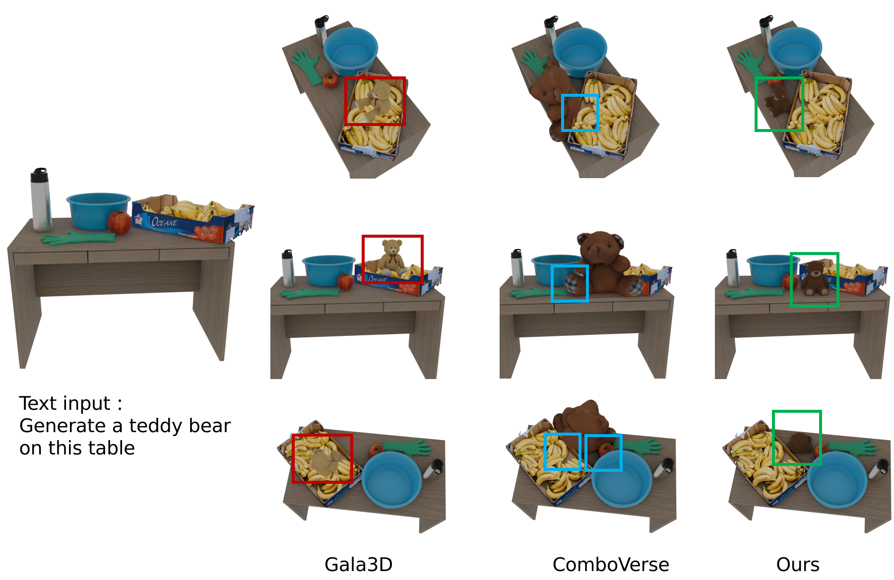
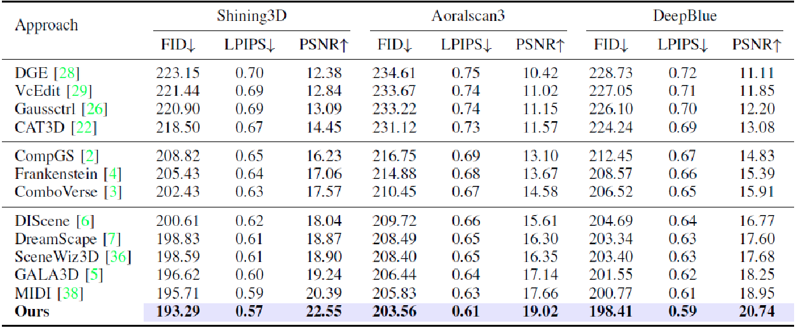

The automatic design of a 3D tooth model plays an important role in dental digitization. However, current approaches struggle with compositional 3D tooth generation because both layouts and shapes of missing teeth need to be optimized. In addition, the collision conflict is omitted in 3D Gaussian-based compositional 3D generation, where objects may intersect with each other caused by the missing of explicit geometry information on the object surface. Motivated by graph generation based on the diffusion model and collision detection by 3D Gaussian, we design an approach for compositional tooth generation, where the layout of missing teeth is progressively restored in the denoising phase by both text and graph constraints. Then, the Gaussian parameters of each layout-guided tooth and the entire jaw are alternately updated using score distillation sampling (SDS). Moreover, a regularization term based on distances from 3D Gaussians of neighboring teeth to the anchor tooth is explored to penalize the tooth intersection. The experimental results on two tooth design datasets indicate that our approach improves the multiview consistency and realism of the generated teeth by a margin compared to the prevailing approaches.
Visualization of initial tooth layouts generated by different algorithms across various datasets. Our method demonstrates stronger geometric coherence and fewer overlaps.
Quantitative comparison table across three dental datasets. Our method consistently achieves the best performance in layout accuracy, collision rate, and reconstruction fidelity.
| Methods | MVDream | ControlNet | GALA3D | ComboVerse | Ours |
|---|---|---|---|---|---|
| Inference Time (minutes) | 2 | 3 | 3.5 | 3.6 | 4 |
The curve of training loss in ablation studies. Our proposed components help achieve faster convergence and better stability during optimization.
Qualitative comparisons between ComboVerse, GALA3D, and our approach on the Shining3D tooth design dataset are illustrated. Our method better preserves structural details and avoids shape artifacts under complex occlusions and missing regions.